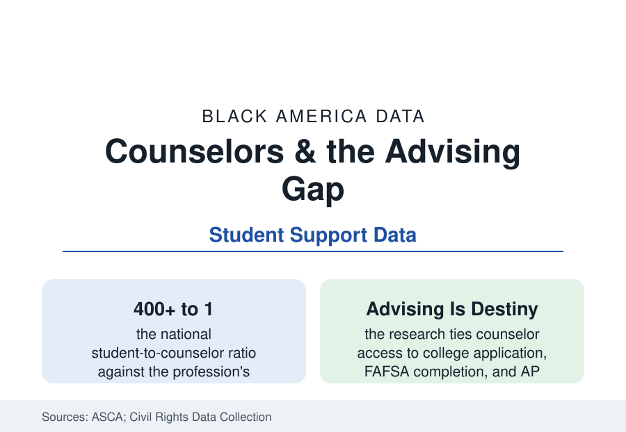

Black Education
School Counselors and the Advising Gap: Who Gets a Guide
American schools average over 400 students per counselor; Black students' access to college advising runs through the thinnest-staffed offices. The ASCA and federal data.

Every other file in this section passes through one office: the counselor's. Course placement, gifted referral, AP encouragement, the college list, the FAFSA — the advising function is where the system's possibilities become a particular student's plan. America's schools staff that office at over 400 students per counselor against a recommended 250, and majority-Black schools staff it thinnest. This article reports the counseling data.
The Ratios and Where They Fall
The ASCA's annual compilation and the Civil Rights Data Collection draw the map: the national ratio hovers in the 380–430-to-1 range across recent years, with enormous state spread (a few states near 200, several above 600) and the within-state distribution following the funding file — the high-poverty and majority-Black schools of the CRDC recording the highest ratios and the highest shares of schools with no counselor at all at the elementary level. The composition data add the representation layer: school counselors are roughly three-quarters white and overwhelmingly female in the federal staffing tables, with Black counselors at under a tenth of the workforce — a concordance variable the advising research treats seriously, as the next sections show. The assignment data complete the structural picture: counselors in under-resourced schools report spending their time on scheduling, testing administration, and crisis response in the profession's own surveys — the college-advising function rationed to the students who arrive already knowing to ask.
What Advising Does in the Outcome Data
The causal literature on counseling access is unusually consistent. Additional counselor staffing in the studied districts raises college enrollment and persistence (the quasi-experimental studies of counselor additions posting gains concentrated among low-income and first-generation students); counselor caseload composition matters (students assigned to counselors with smaller loads apply more broadly and complete FAFSA at higher rates in the district studies); and the same-counselor continuity across years compounds it. The FAFSA file is the cleanest measurement: the completion campaigns that work (the data-driven outreach of districts that assign every senior a counselor touchpoint and a completion tracker) post completion gains of ten-plus points in the evaluated programs — against the national pattern where the students with the most aid eligibility complete at the lowest rates, advised by the internet and the aunties in the advising data's portrait of the actual system. The AP file's first page lives here too: counselor encouragement is among the strongest predictors of advanced-course enrollment for qualified students in the College Board's analyses — the gate is often a conversation that never happens at 430-to-1.
The College Advising Corps and the Workarounds
The system's patch is an industry of its own: the College Advising Corps and its near-peer model (recent graduates placed as full-time college advisers in high-poverty high schools — its evaluated cohorts posting application and enrollment gains across dozens of partner districts), the community-based organizations (the College Track, SEO, and local CBOs of the cities files), the TRIO programs (Upward Bound and Talent Search, the federal file's fifty-year infrastructure for first-generation advising, its evaluations debated and its reach — hundreds of thousands of students — unmatched), the virtual advising platforms (text-message and AI-assisted advising whose trial data show real if modest completion effects), and the HBCU and college-access fairs of the church and fraternity infrastructure. The private market prices the gap from the other side: independent educational consultants at thousands per family, in the suburbs whose public ratios already run lowest — the advising economy's two tiers describing, in one market, the public system's rationing.
Discipline, Crisis, and the Counselor's Other Jobs
The counselor's office is also where the discipline file's alternatives live: the restorative and check-in systems (Check & Connect and its evaluated dropout reductions), the threat-assessment and crisis teams of the post-tragedy school safety era (whose staffing mandates compete for the same budget line as advising in the state data), the mental-health first response of the adolescent health file (the counselor as the school's de facto clinician at ratios no clinician would accept — the school psychologist and social worker ratios running thinner still in the federal tables). The profession's own standards (the ASCA model's 80-percent-direct-services rule) against the surveyed reality (testing coordination and schedule clerking consuming the week in high-poverty schools) state the reform agenda in the profession's own terms — and the funding file prices it: closing the national ratio to 250-to-1 is a hiring program in the low tens of thousands of counselors, a number the state budget offices can quote to the dollar.
Reading the Advising Data
Talent is distributed by birth; information is distributed by staffing. The advising data measure the exact point where the education system's abstractions become a seventeen-year-old's actual options — a ratio, a caseload, a conversation. At 430-to-1, the conversation mostly does not happen, and the pipeline files of this section are what happens instead. The counselor's door is the smallest room in the building and the one the whole structure leans on.
More in Black Education
Black Educational Attainment: High School Parity, the College Gap
About 89 percent of Black adults hold a high school diploma and one in four holds a bachelor's degree or higher — the attainment ladder, the college completion gap, and the generational trend.
Historically Black Colleges and Universities: Enrollment and Degrees
More than 100 HBCUs enroll roughly 290,000 students and award about one in six Black bachelor's degrees — an outsized share from a small sector. The federal education data.
Black College Enrollment: 2.4 Million Students
About 2.4 million Black students are enrolled in American colleges — nearly two-thirds of them women. The NCES enrollment data by sector, level, and trend.
Source: American School Counselor Association staffing data; U.S. Department of Education Civil Rights Data Collection; National Association for College Admission Counseling; College Board advising research.